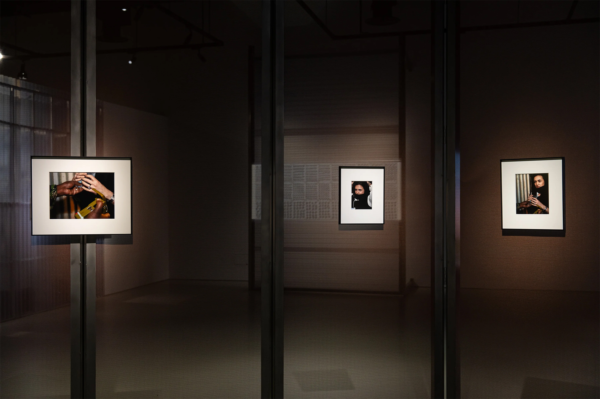
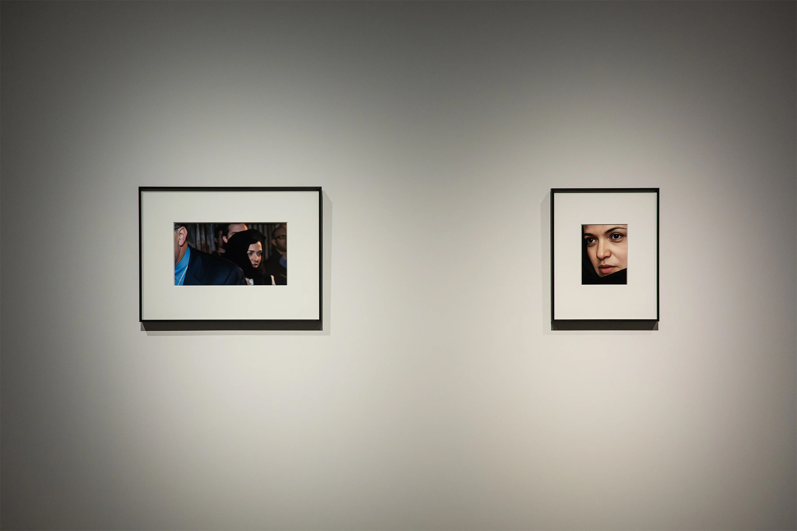
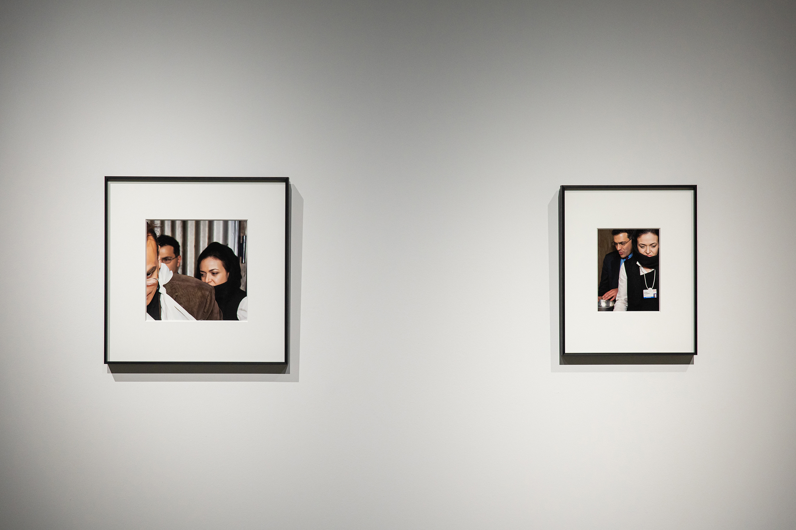
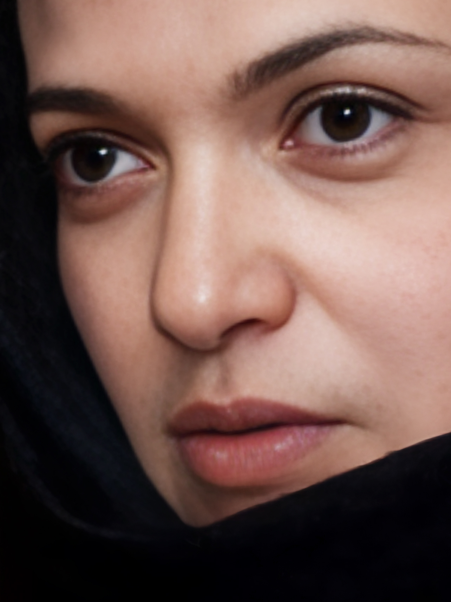
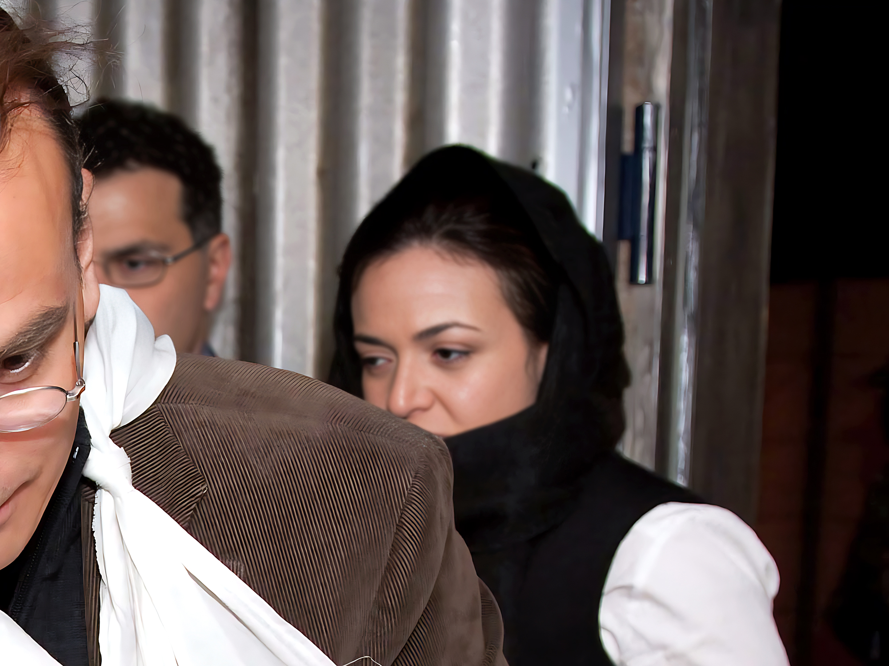
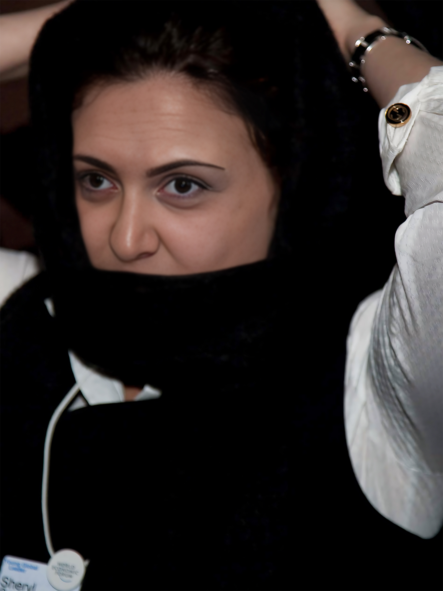
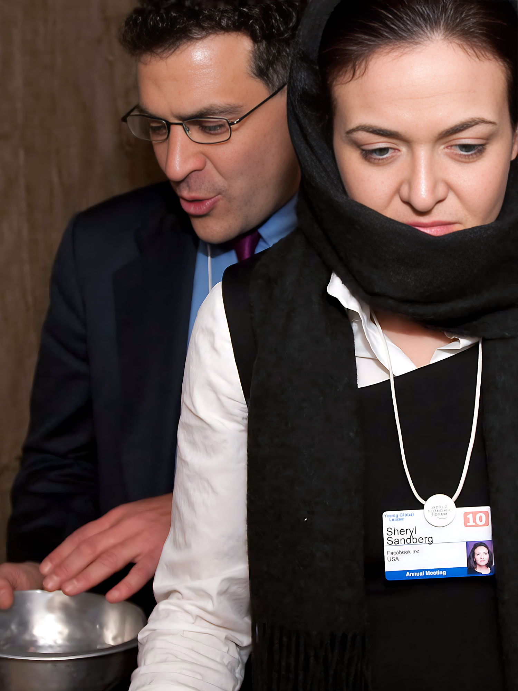
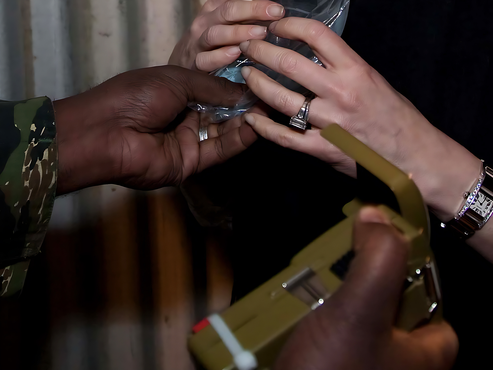

◟◝
Visual Inspection Zone
Proof of Personhood, 2019/2023
Singapore Art Museum
Support: Singapore Art Museum
Visual Inspection Zone
Proof of Personhood, 2019/2023
Singapore Art Museum
Support: Singapore Art Museum



Visual Inspection Zone borrows from a series of promotional images of Facebook COO Sheryl Sandberg produced during a “refugee simulation” at the World Economic Forum in Davos in 2010. The imaginary scenario documented by the publicity image—the spectacular violence of the border regime—is inverted into a new documentary of the fictional images constructed by passport counterfeiters.
Using a software package developed and disseminated by passport counterfeiters, Sheryl's identity is combined with the biometric information of passports and identity cards trafficked on the dark web until a plausible hybrid identity is achieved. The "Visual Inspection Zone" is the non-machine-readable portion of a passport's identity page: moving between the images, the audience constructs a third identity between Sheryl and her inadvertent proxies (Erika, Alessia, Sozan, Raghda, Lily, Zahra, and Sheera)—that of the border officer.
Erika, 2023
Photograph
 Alessia, 2023
Alessia, 2023
Photograph
Sozan, 2023
Photograph
Raghda, 2023
Photograph
Lily, 2023
Photograph
Zahra, 2023
Photograph
Sheera, 2023
Photograph